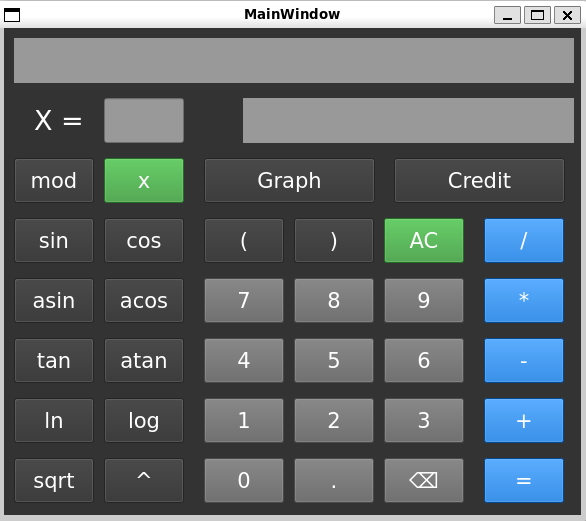
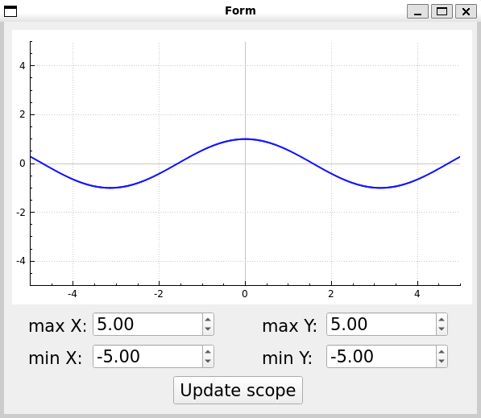
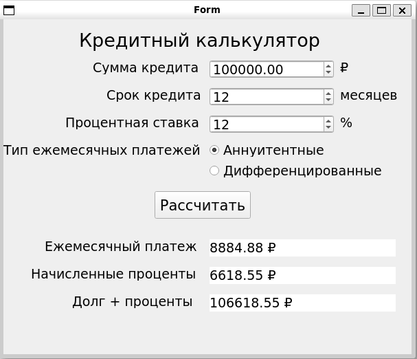

Руководство SmartCalc v2.0-1
Содержание
- Установка
- Запуск калькулятора
- Создание архива
- Описание SmartCalc_v2.0-1
- Удаление
Установка
Для установки калькулятора перейдите в терминале в папку src и выполните команду:
make install
Дождитесь завершения процесса установки. В папке build появится исполняемый файл SmartCalc_2_0
Запуск калькулятора
Перейдите в папку build и запустите файл SmartCalc_2_0
./SmartCalc_2_0
Создание архива
Для создания архива перейдите в терминале в папку src и выполните команду:
make dist
Дождитесь завершения процесса установки. В папке src появится файл dist.tar
Описание SmartCalc_v2.0-1
- Калькулятор
Запустив программу, Вы увидите следующее:

- Калькулятор позволяет проводить арифметические операции с различными операторами (сложение,
вычитание, умножение, деление, остаток от деления, возведение в степень) и функциями (см. далее).
- На вход программы могут подаваться как целые числа, так и вещественные числа, записанные через
точку.
- Может производить вычисление произвольных скобочных арифметических выражений в инфиксной нотации
- Вычисление производятся после полного ввода вычисляемого выражения и нажатия на символ `=`.
- Позволяет вычислять выражения длинной до 255 символов
- Функции:
| Описание функции |
Функция |
| Вычисляет косинус |
cos(x) |
| Вычисляет синус |
sin(x) |
| Вычисляет тангенс |
tan(x) |
| Вычисляет арккосинус |
acos(x) |
| Вычисляет арксинус |
asin(x) |
| Вычисляет арктангенс |
atan(x) |
| Вычисляет квадратный корень |
sqrt(x) |
| Вычисляет натуральный логарифм |
ln(x) |
| Вычисляет десятичный логарифм |
log(x) |
- Построение графиков
При нажатии кнопки "Построить график" появляется следующее окно:

Доступны следующие возможности:
- Построение графика функции, заданной с помощью выражения в инфиксной нотации с переменной x.
- Вычисление произвольных скобочных арифметических выражений в инфиксной нотации с подстановкой
значения переменной x в виде числа.
- Задание области определения и области значения функции в диапазонах от -1000000 до 1000000.
- Кредитный калькулятор
При нажатии кнопки "Кредитный калькулятор" появляется следующее окно:

Доступны следующие возможности:
- Расчёт ежемесячного платежа, переплаты по кредиту и общей выплаты исходя из заданных значений общей
суммы кредита, срока и процентной ставки.
- Выбор типа платежа: аннуитентный или дифференцированный.
Удаление
Для удаления SmartCalc перейдите в папку src и выполните в терминале команду:
make uninstall